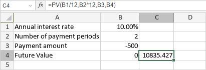

PV funkcija
PV funkcija je jedna od finansijskih funkcija. Koristi se za izračunavanje sadašnje vrednosti investicije na osnovu određene kamatne stope i konstantnog rasporeda plaćanja.
Sintaksa
PV(rate, nper, pmt, [fv], [type])
PV funkcija ima sledeće argumente:
| Argument | Opis |
|---|---|
| rate | Kamatna stopa. |
| nper | Broj uplata. |
| pmt | Iznos uplate. |
| fv | Buduća vrednost. Ovo je opcioni argument. Ako se izostavi, funkcija će podrazumevati da je fv jednako 0. |
| type | Period kada dospevaju uplate. Ovo je opcioni argument. Ako je postavljen na 0 ili izostavljen, funkcija će podrazumevati da uplate dospevaju na kraju perioda. Ako je type postavljen na 1, uplate dospevaju na početku perioda. |
Napomene
Isplate gotovine (kao što su depoziti na štednju) predstavljene su negativnim brojevima; primljena gotovina (kao što su čekovi za dividende) predstavljena je pozitivnim brojevima. Jedinice za rate i nper moraju biti usklađene: koristite N%/12 za rate i N*12 za nper u slučaju mesečnih uplata, N%/4 za rate i N*4 za nper u slučaju kvartalnih uplata, N% za rate i N za nper u slučaju godišnjih uplata.
Kako primeniti PV funkciju.
Primeri
Slika ispod prikazuje rezultat koji vraća PV funkcija.
